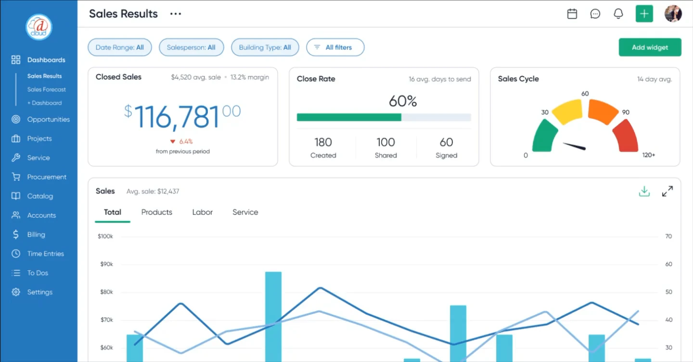

62% Multi-Dashboard Adoption
Custom Dashboards & AI Summaries
Replaced Monday morning spreadsheet exports with role-based dashboard templates. Users built their own views for dispatch and margins. Sustained platform views jumped 71%.
Core Craft
Modular KPI Widgets · Drag-and-Drop Canvas
AI Experience
1-Click Summaries Bound to Visible Data
Real Outcome
62% Saved Multiple Views · +71% Daily Usage